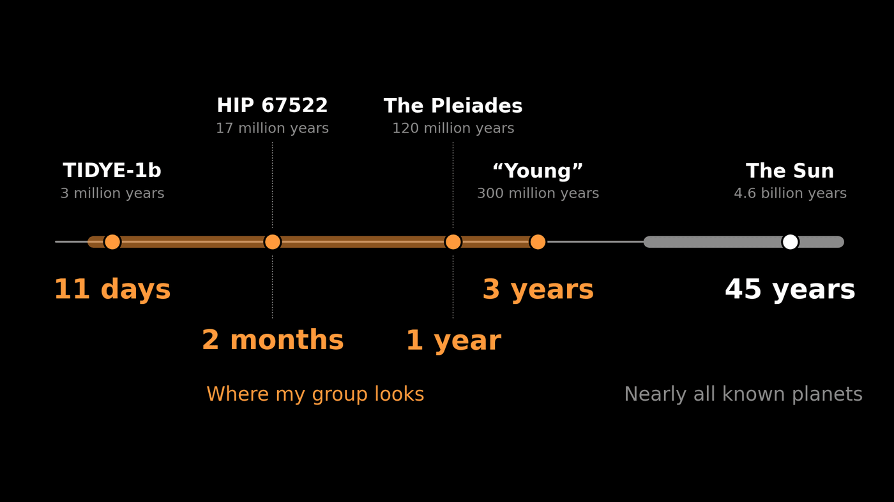

We study how planets change in their first few hundred million years. That means finding planets around
young stars, measuring how old those stars are, and comparing young planets to the mature ones found by Kepler and TESS.
Each project below tackles one piece of that.

Where we look. If the Sun were 45 years old, TIDYE-1b would be 11 days old, HIP 67522 two months old, and the Pleiades one year old. Nearly all known planets orbit stars that are billions of years old; our group works on the first few "years."
MOLUSC: limits on unseen stellar companions from radial velocities, high-resolution imaging, and Gaia (more).
EVA: association ages from Gaia excess photometric uncertainties (more).
Comove: finds comoving neighbors of a target star and returns youth diagnostics (FindFriends), and tests whether a close neighbor is a binary companion or a chance alignment (BinProb).
 {%- endfor %}
{%- endfor %}